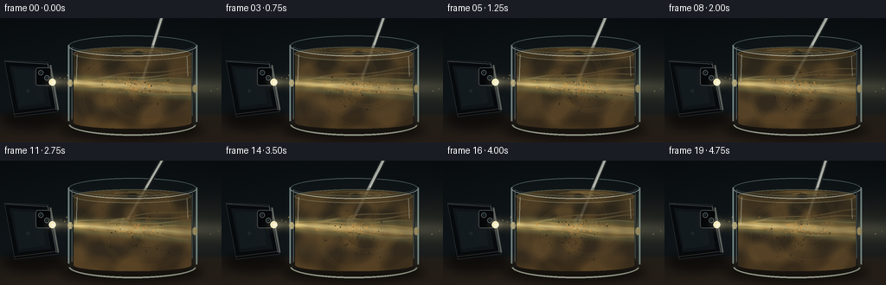
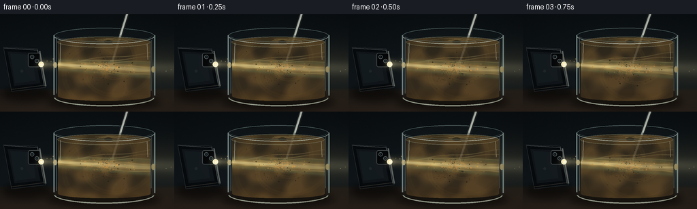

CODING AGENTS AS PIXEL WORLD MODELS
traex/GPT-5.6-Sol · phygen_049
点击播放 · 原生 RGB 像素
逐轮保存的候选
回放视频、检查图与代码变化。
每份候选均可单独播放。实际图片检查记录在下方工具轨迹中。
候选 01播放与检查图
点击播放 · 原生 RGB 像素


展开代码变化
--- 上一保存版本
+++ 本次保存版本
@@ -0,0 +1,279 @@
+from pathlib import Path
+import math
+import numpy as np
+from PIL import Image, ImageDraw, ImageFilter
+import artifact_io
+
+# Procedural, deterministic close-up of a phone beam crossing stirred muddy water.
+W, H, N = 256, 144, 20
+S = 3
+w, h = W*S, H*S
+rng = np.random.default_rng(49049)
+Y, X = np.mgrid[0:h, 0:w].astype(np.float32)
+x = X / S
+y = Y / S
+
+
+def blend(img, color, alpha):
+ """Alpha blend a solid RGB color, alpha may be an array."""
+ a = np.clip(alpha, 0, 1)[..., None]
+ return img * (1-a) + np.asarray(color, np.float32) * a
+
+
+def rgba_layer(draw_fn, blur=0):
+ im = Image.new('RGBA', (w, h), (0,0,0,0))
+ d = ImageDraw.Draw(im, 'RGBA')
+ draw_fn(d)
+ if blur:
+ im = im.filter(ImageFilter.GaussianBlur(blur*S))
+ return np.asarray(im).astype(np.float32)
+
+
+def composite_rgba(img, lay):
+ a = lay[..., 3:4] / 255.0
+ return img*(1-a) + lay[..., :3]*a
+
+
+def P(points):
+ return [(int(a*S), int(b*S)) for a,b in points]
+
+
+def ellipse_box(box):
+ return tuple(int(v*S) for v in box)
+
+# Persistent silt particles: radius, angle, vertical flattening and appearance.
+particles = []
+for i in range(250):
+ rr = rng.uniform(5, 66) * np.sqrt(rng.random())
+ ang = rng.uniform(0, 2*np.pi)
+ # mostly live in the stirred volume
+ cy = rng.uniform(71, 92)
+ size = rng.choice([0.35, 0.45, 0.6, 0.8, 1.05], p=[.20,.27,.27,.18,.08])
+ particles.append((rr, ang, cy, size, rng.random()))
+
+# fixed dust motes visible in the air beam
+air_dust = [(rng.uniform(63,252), rng.uniform(56,99), rng.uniform(.25,.7), rng.random()) for _ in range(55)]
+
+frames=[]
+for fi in range(N):
+ t = fi / 4.0
+ phase = 2*np.pi*fi/N
+
+ # Dark room with a faint cool wall and a warm tabletop.
+ gy = y/H
+ img = np.zeros((h,w,3), np.float32)
+ img[...,0] = 10 + 8*gy
+ img[...,1] = 15 + 10*gy
+ img[...,2] = 18 + 11*gy
+ # subtle wall illumination behind the vessel
+ wall_glow = np.exp(-(((x-157)/112)**2 + ((y-69)/78)**2)*1.5)
+ img = blend(img, (30,34,30), .13*wall_glow)
+ table_a = np.clip((y-108)/6,0,1)
+ table_col = np.stack([31+13*(y-112)/32, 27+8*(y-112)/32, 23+5*(y-112)/32],axis=-1)
+ img = img*(1-table_a[...,None]) + table_col*table_a[...,None]
+ # fine photographic grain
+ grain = rng.normal(0, .65, (h,w,1)).astype(np.float32)
+ img += grain
+
+ # soft tabletop shadows, before objects
+ def shadows(d):
+ d.ellipse(ellipse_box((68,116,236,141)), fill=(0,0,0,155))
+ d.ellipse(ellipse_box((2,105,76,130)), fill=(0,0,0,130))
+ img = composite_rgba(img, rgba_layer(shadows, blur=5))
+
+ # The directed flashlight cone in air. Stronger near the phone, faint after jar.
+ srcx, srcy = 60.0, 73.5
+ dx = np.maximum(x-srcx, 0)
+ beam_center = srcy + 0.035*dx
+ beam_width = 4.0 + .105*dx
+ cone = np.exp(-0.5*((y-beam_center)/beam_width)**2) * (x>=srcx)
+ cone *= np.exp(-dx/430)
+ # Occluded air portions; inside gets rendered separately.
+ airseg = ((x<82) | (x>223)).astype(np.float32)
+ img = blend(img, (240,207,125), cone*airseg*.15)
+ core = np.exp(-0.5*((y-beam_center)/(2.2+.025*dx))**2)*(x>=srcx)*airseg
+ img = blend(img, (255,244,194), core*.13)
+
+ # Dust in the free beam catches occasional points of light.
+ def draw_air_dust(d):
+ for px,py,pr,q in air_dust:
+ # tiny drifting movement, only draw if it lies in cone outside vessel
+ xx=px + .7*math.sin(phase + q*9)
+ yy=py + .45*math.cos(phase*.7 + q*13)
+ if (xx < 81 or xx > 224) and abs(yy-(srcy+.035*(xx-srcx))) < 11+.04*(xx-srcx):
+ a=int(35+80*q)
+ d.ellipse(ellipse_box((xx-pr,yy-pr,xx+pr,yy+pr)), fill=(255,229,157,a))
+ img = composite_rgba(img, rgba_layer(draw_air_dust, blur=.15))
+
+ # Spoon is behind the muddy water. Its lower end moves in a small stirring circle.
+ bottomx = 153 + 10*math.cos(phase)
+ bottomy = 76 + 4*math.sin(phase)
+ topx = 188 + 2*math.sin(phase*.55)
+ topy = -5
+ def spoon_back(d):
+ d.line(P([(topx,topy),(bottomx,bottomy)]), fill=(25,29,28,230), width=6*S)
+ d.line(P([(topx,topy),(bottomx,bottomy)]), fill=(142,151,145,235), width=3*S)
+ d.line(P([(topx+.3,topy),(bottomx+.3,bottomy)]), fill=(224,221,190,145), width=1*S)
+ d.ellipse(ellipse_box((bottomx-5,bottomy-8,bottomx+5,bottomy+8)), fill=(118,123,112,215), outline=(200,199,171,150), width=1*S)
+ img = composite_rgba(img, rgba_layer(spoon_back, blur=.12))
+
+ # Cylindrical glass silhouette and transparent cool tint.
+ q = (x-153)/73
+ root = np.sqrt(np.clip(1-q*q,0,1))
+ outer = (np.abs(q)<=1) & (y >= 31-10*root) & (y <= 122+11*root)
+ edgefade = np.clip((73-np.abs(x-153))/7,0,1)
+ img = blend(img, (116,146,145), outer.astype(float)*(.025+.025*(1-edgefade)))
+
+ # Muddy water volume with a rotating, cloudy vortex texture.
+ qw = (x-153)/68
+ rw = np.sqrt(np.clip(1-qw*qw,0,1))
+ water = (np.abs(qw)<=1) & (y >= 41-7.0*rw) & (y <= 121+7*rw)
+ vx = x-154
+ vy = (y-77)*1.22
+ rad = np.sqrt(vx*vx+vy*vy)+.001
+ theta = np.arctan2(vy,vx)
+ # Several incommensurate smooth fields produce organic suspended sediment.
+ turb = (0.46*np.sin(.105*rad - 3.2*theta - phase*1.55) +
+ 0.28*np.sin(.057*rad + 5.0*theta + phase*.9) +
+ 0.17*np.sin(.19*x + .11*y + phase*1.2) +
+ 0.13*np.cos(.08*x - .23*y - phase*.65))
+ clouds = np.clip(.52 + turb, 0, 1)
+ # Denser silt low in the jar, translucent around the beam.
+ settling = np.clip((y-37)/100,0,1)
+ mudR = 53 + 35*clouds + 18*settling
+ mudG = 43 + 25*clouds + 11*settling
+ mudB = 27 + 11*clouds + 5*settling
+ mudcol = np.stack([mudR,mudG,mudB],axis=-1)
+ a = water.astype(np.float32)*(.73 + .10*clouds)
+ img = img*(1-a[...,None]) + mudcol*a[...,None]
+
+ # A brighter refracted flashlight shaft within the turbid fluid.
+ refr_center = 74.3 + .057*(x-82) + 1.1*np.sin(phase*.72)
+ sigma = 4.2 + .020*(x-82)
+ b = np.exp(-.5*((y-refr_center)/sigma)**2) * water
+ attenuation = np.clip(1-.0036*(x-84), .47, 1)
+ # sediment makes mottled bright and dim regions rather than a flat cone
+ mottled = np.clip(.83 - .31*turb + .12*np.sin(.29*x-.13*y+phase), .35, 1.25)
+ bi = b*attenuation*mottled
+ img = blend(img, (246,203,101), bi*.60)
+ core2 = np.exp(-.5*((y-refr_center)/(1.45+.012*(x-82)))**2)*water
+ img = blend(img, (255,244,183), core2*attenuation*.48)
+ # Subtle green/cyan scattering at the shaft boundaries.
+ edgebeam = np.exp(-.5*((np.abs(y-refr_center)-sigma*1.45)/2.0)**2)*water
+ img = blend(img, (122,177,135), edgebeam*.12)
+
+ # Curved caustic filaments reveal light bending around swirling particles.
+ caustic = np.zeros((h,w),np.float32)
+ for j,sl in enumerate([-.105,-.065,-.025,.018,.060,.100]):
+ curve = 74 + sl*(x-61) + 1.4*np.sin(.075*x + phase*1.25 + j*1.37)
+ line = np.exp(-.5*((y-curve)/(.45+.1*(j%2)))**2)
+ caustic += line
+ caustic = np.clip(caustic,0,1)*water*np.exp(-np.maximum(x-82,0)/280)
+ caustic *= (.35+.65*np.clip(1-clouds,0,1))
+ img = blend(img, (255,225,145), caustic*.30)
+
+ # Spiral wisps make the active stirring legible.
+ spiralphase = np.sin(3*theta + .19*rad - phase*2.0)
+ wisps = np.exp(-((spiralphase-.90)/.13)**2) * np.exp(-rad/62) * water
+ img = blend(img, (173,130,59), wisps*.12)
+
+ # Many moving silt grains rotate at different angular speeds and sparkle in beam.
+ def draw_particles(d):
+ for rr, ang0, pcy, size, qv in particles:
+ omega = .28 + .75*(1-rr/70) # fluid rotates faster near the center
+ ang = ang0 + omega*t + .12*math.sin(t*.65 + qv*8)
+ px = 154 + rr*math.cos(ang)
+ py = pcy + .54*rr*math.sin(ang) + .7*math.sin(t+qv*11)
+ if px<86 or px>219 or py<38 or py>125: continue
+ bc = 74.3 + .057*(px-82) + 1.1*math.sin(phase*.72)
+ lit = math.exp(-.5*((py-bc)/7.0)**2)
+ if qv>.16:
+ col=(55+int(150*lit), 38+int(118*lit), 19+int(63*lit), 105+int(115*lit))
+ else:
+ col=(28,23,16,165)
+ r=size*(.75+qv*.55)
+ d.ellipse(ellipse_box((px-r,py-r,px+r,py+r)), fill=col)
+ img = composite_rgba(img, rgba_layer(draw_particles, blur=.06))
+
+ # Water surface: elliptical rim, vortex depression and concentric rotating ripples.
+ def surface(d):
+ # far/back rim and muddy surface ellipse
+ d.ellipse(ellipse_box((84,33,221,49)), fill=(100,77,38,65), outline=(178,177,141,105), width=1*S)
+ # moving curved ripples around stir point
+ sx=156+3*math.cos(phase)
+ for k in range(3):
+ rx=17+k*12
+ ry=2.1+k*1.25
+ start=190+int((phase*180/math.pi + k*38)%100)
+ d.arc(ellipse_box((sx-rx,40-ry,sx+rx,40+ry)), start=start, end=start+145, fill=(221,190,111,80-k*12), width=1*S)
+ d.ellipse(ellipse_box((sx-6,38,sx+6,43)), fill=(29,28,19,115))
+ img = composite_rgba(img, rgba_layer(surface, blur=.15))
+
+ # Glass geometry: crisp rim, vertical highlights, base and refracted beam entry/exit glints.
+ def glass_lines(d):
+ # back rim then front rim highlights
+ d.arc(ellipse_box((79,20,227,44)), 180, 360, fill=(151,179,176,125), width=1*S)
+ d.arc(ellipse_box((79,20,227,44)), 4, 176, fill=(218,230,219,185), width=1*S)
+ d.arc(ellipse_box((82,23,224,41)), 8, 172, fill=(104,130,130,115), width=1*S)
+ d.line(P([(79,31),(79,119)]), fill=(194,220,216,140), width=2*S)
+ d.line(P([(83,34),(83,117)]), fill=(234,242,225,83), width=1*S)
+ d.line(P([(227,31),(227,120)]), fill=(190,218,211,145), width=2*S)
+ d.line(P([(222,38),(222,113)]), fill=(236,244,221,70), width=1*S)
+ d.arc(ellipse_box((79,109,227,136)), 0, 180, fill=(86,112,112,100), width=1*S)
+ d.arc(ellipse_box((79,109,227,136)), 8, 174, fill=(213,224,203,175), width=2*S)
+ # narrow reflected highlights
+ d.line(P([(89,42),(88,73)]), fill=(235,248,234,110), width=1*S)
+ d.line(P([(216,44),(217,67)]), fill=(241,244,219,95), width=1*S)
+ d.ellipse(ellipse_box((78,71,84,79)), fill=(255,235,171,155))
+ d.ellipse(ellipse_box((222,77,228,86)), fill=(255,226,145,120))
+ img = composite_rgba(img, rgba_layer(glass_lines, blur=.10))
+
+ # Redraw the exposed (above-water) spoon stem for a clean metallic highlight.
+ # Interpolate point where stem crosses y=31.
+ f = (31-topy)/(bottomy-topy)
+ crossx = topx + f*(bottomx-topx)
+ def spoon_front(d):
+ d.line(P([(topx,topy),(crossx,31)]), fill=(30,34,34,245), width=6*S)
+ d.line(P([(topx,topy),(crossx,31)]), fill=(164,172,168,245), width=3*S)
+ d.line(P([(topx+.4,topy),(crossx+.4,31)]), fill=(245,243,220,160), width=1*S)
+ img = composite_rgba(img, rgba_layer(spoon_front, blur=.08))
+
+ # Phone in the foreground, visibly the source of the flashlight beam.
+ def phone(d):
+ body=P([(5,49),(55,51),(67,108),(17,114)])
+ d.polygon(body, fill=(8,11,14,255), outline=(77,84,86,255))
+ # bevels and back-panel reflections
+ d.line(P([(6,50),(55,53),(65,106)]), fill=(108,115,115,175), width=1*S)
+ d.line(P([(17,111),(64,105)]), fill=(101,92,77,130), width=1*S)
+ d.polygon(P([(11,55),(50,57),(59,102),(21,106)]), fill=(17,22,26,255))
+ d.polygon(P([(15,58),(47,60),(52,98),(22,102)]), fill=(21,28,32,255))
+ # camera island makes the object unambiguously a smartphone
+ d.rounded_rectangle(ellipse_box((41,57,59,78)), radius=3*S, fill=(5,7,9,255), outline=(70,76,75,255), width=1*S)
+ for cx,cy in [(47,63),(54,69)]:
+ d.ellipse(ellipse_box((cx-3,cy-3,cx+3,cy+3)), fill=(1,3,5,255), outline=(91,100,100,255), width=1*S)
+ d.ellipse(ellipse_box((cx-1.2,cy-1.2,cx+1.2,cy+1.2)), fill=(28,42,48,255))
+ # side edge and bright LED aperture at beam origin
+ d.line(P([(58,54),(67,106)]), fill=(112,117,110,210), width=2*S)
+ d.ellipse(ellipse_box((56.5,70,64.5,78)), fill=(255,238,180,255), outline=(255,255,230,255), width=1*S)
+ d.ellipse(ellipse_box((59,72.5,63,76.5)), fill=(255,255,238,255))
+ # tiny brandless back detail
+ d.ellipse(ellipse_box((30,82,34,86)), fill=(59,65,65,105))
+ img = composite_rgba(img, rgba_layer(phone, blur=.06))
+
+ # Lens flare halo at LED drawn on top.
+ ledhalo = np.exp(-(((x-61)/9)**2+((y-74)/8)**2)*1.6)
+ img = blend(img,(255,235,174),ledhalo*.22)
+
+ # Ground-contact reflections of bright shaft and jar base.
+ refl = np.exp(-.5*((y-127)/5)**2)*np.exp(-.5*((x-160)/58)**2)*(y>119)
+ img = blend(img,(120,89,43),refl*.08)
+
+ # Gentle vignette and final antialiasing downsample.
+ vign = np.clip(1 - .19*(((x-W/2)/(W*.72))**2 + ((y-H/2)/(H*.72))**2), .72,1)
+ img *= vign[...,None]
+ img = np.clip(img,0,255).astype(np.uint8)
+ pil=Image.fromarray(img,'RGB').resize((W,H),Image.Resampling.LANCZOS)
+ frames.append(np.asarray(pil,dtype=np.uint8))
+
+frames=np.stack(frames,axis=0)
+artifact_io.save(frames, Path(__file__).resolve().parent)
可观测工具轨迹
实际执行的命令与返回图片。
命令 1exit 0
/bin/bash -lc "cat prompt.txt && printf '\\n---RULES---\\n' && cat GENERATION_RULES.md && printf '\\n---SPEC---\\n' && cat task_spec.json"
命令 2exit 0
/bin/bash -lc "find . -maxdepth 2 -type f -printf '%p\\n' | sort && printf '\\nTOOLS\\n' && command -v ffmpeg || true && command -v blender || true && command -v python3 || true"
命令 3exit 0
/bin/bash -lc "sed -n '1,240p' artifact_io.py"
命令 4exit 0
/bin/bash -lc "cat > generate.py <<'PY'
from pathlib import Path
import math
import numpy as np
from PIL import Image, ImageDraw, ImageFilter
import artifact_io
# Procedural, deterministic close-up of a phone beam crossing stirred muddy water.
W, H, N = 256, 144, 20
S = 3
w, h = W*S, H*S
rng = np.random.default_rng(49049)
Y, X = np.mgrid[0:h, 0:w].astype(np.float32)
x = X / S
y = Y / S
def blend(img, color, alpha):
\"\"\"Alpha blend a solid RGB color, alpha may be an array.\"\"\"
a = np.clip(alpha, 0, 1)[..., None]
return img * (1-a) + np.asarray(color, np.float32) * a
def rgba_layer(draw_fn, blur=0):
im = Image.new('RGBA', (w, h), (0,0,0,0))
d = ImageDraw.Draw(im, 'RGBA')
draw_fn(d)
if blur:
im = im.filter(ImageFilter.GaussianBlur(blur*S))
return np.asarray(im).astype(np.float32)
def composite_rgba(img, lay):
a = lay[..., 3:4] / 255.0
return img*(1-a) + lay[..., :3]*a
def P(points):
return [(int(a*S), int(b*S)) for a,b in points]
def ellipse_box(box):
return tuple(int(v*S) for v in box)
# Persistent silt particles: radius, angle, vertical flattening and appearance.
particles = []
for i in range(250):
rr = rng.uniform(5, 66) * np.sqrt(rng.random())
ang = rng.uniform(0, 2*np.pi)
# mostly live in the stirred volume
cy = rng.uniform(71, 92)
size = rng.choice([0.35, 0.45, 0.6, 0.8, 1.05], p=[.20,.27,.27,.18,.08])
particles.append((rr, ang, cy, size, rng.random()))
# fixed dust motes visible in the air beam
air_dust = [(rng.uniform(63,252), rng.uniform(56,99), rng.uniform(.25,.7), rng.random()) for _ in range(55)]
frames=[]
for fi in range(N):
t = fi / 4.0
phase = 2*np.pi*fi/N
# Dark room with a faint cool wall and a warm tabletop.
gy = y/H
img = np.zeros((h,w,3), np.float32)
img[...,0] = 10 + 8*gy
img[...,1] = 15 + 10*gy
img[...,2] = 18 + 11*gy
# subtle wall illumination behind the vessel
wall_glow = np.exp(-(((x-157)/112)**2 + ((y-69)/78)**2)*1.5)
img = blend(img, (30,34,30), .13*wall_glow)
table_a = np.clip((y-108)/6,0,1)
table_col = np.stack([31+13*(y-112)/32, 27+8*(y-112)/32, 23+5*(y-112)/32],axis=-1)
img = img*(1-table_a[...,None]) + table_col*table_a[...,None]
# fine photographic grain
grain = rng.normal(0, .65, (h,w,1)).astype(np.float32)
img += grain
# soft tabletop shadows, before objects
def shadows(d):
d.ellipse(ellipse_box((68,116,236,141)), fill=(0,0,0,155))
d.ellipse(ellipse_box((2,105,76,130)), fill=(0,0,0,130))
img = composite_rgba(img, rgba_layer(shadows, blur=5))
# The directed flashlight cone in air. Stronger near the phone, faint after jar.
srcx, srcy = 60.0, 73.5
dx = np.maximum(x-srcx, 0)
beam_center = srcy + 0.035*dx
beam_width = 4.0 + .105*dx
cone = np.exp(-0.5*((y-beam_center)/beam_width)**2) * (x>=srcx)
cone *= np.exp(-dx/430)
# Occluded air portions; inside gets rendered separately.
airseg = ((x<82) | (x>223)).astype(np.float32)
img = blend(img, (240,207,125), cone*airseg*.15)
core = np.exp(-0.5*((y-beam_center)/(2.2+.025*dx))**2)*(x>=srcx)*airseg
img = blend(img, (255,244,194), core*.13)
# Dust in the free beam catches occasional points of light.
def draw_air_dust(d):
for px,py,pr,q in air_dust:
# tiny drifting movement, only draw if it lies in cone outside vessel
xx=px + .7*math.sin(phase + q*9)
yy=py + .45*math.cos(phase*.7 + q*13)
if (xx < 81 or xx > 224) and abs(yy-(srcy+.035*(xx-srcx))) < 11+.04*(xx-srcx):
a=int(35+80*q)
d.ellipse(ellipse_box((xx-pr,yy-pr,xx+pr,yy+pr)), fill=(255,229,157,a))
img = composite_rgba(img, rgba_layer(draw_air_dust, blur=.15))
# Spoon is behind the muddy water. Its lower end moves in a small stirring circle.
bottomx = 153 + 10*math.cos(phase)
bottomy = 76 + 4*math.sin(phase)
topx = 188 + 2*math.sin(phase*.55)
topy = -5
def spoon_back(d):
d.line(P([(topx,topy),(bottomx,bottomy)]), fill=(25,29,28,230), width=6*S)
d.line(P([(topx,topy),(bottomx,bottomy)]), fill=(142,151,145,235), width=3*S)
d.line(P([(topx+.3,topy),(bottomx+.3,bottomy)]), fill=(224,221,190,145), width=1*S)
d.ellipse(ellipse_box((bottomx-5,bottomy-8,bottomx+5,bottomy+8)), fill=(118,123,112,215), outline=(200,199,171,150), width=1*S)
img = composite_rgba(img, rgba_layer(spoon_back, blur=.12))
# Cylindrical glass silhouette and transparent cool tint.
q = (x-153)/73
root = np.sqrt(np.clip(1-q*q,0,1))
outer = (np.abs(q)<=1) & (y >= 31-10*root) & (y <= 122+11*root)
edgefade = np.clip((73-np.abs(x-153))/7,0,1)
img = blend(img, (116,146,145), outer.astype(float)*(.025+.025*(1-edgefade)))
# Muddy water volume with a rotating, cloudy vortex texture.
qw = (x-153)/68
rw = np.sqrt(np.clip(1-qw*qw,0,1))
water = (np.abs(qw)<=1) & (y >= 41-7.0*rw) & (y <= 121+7*rw)
vx = x-154
vy = (y-77)*1.22
rad = np.sqrt(vx*vx+vy*vy)+.001
theta = np.arctan2(vy,vx)
# Several incommensurate smooth fields produce organic suspended sediment.
turb = (0.46*np.sin(.105*rad - 3.2*theta - phase*1.55) +
0.28*np.sin(.057*rad + 5.0*theta + phase*.9) +
0.17*np.sin(.19*x + .11*y + phase*1.2) +
0.13*np.cos(.08*x - .23*y - phase*.65))
clouds = np.clip(.52 + turb, 0, 1)
# Denser silt low in the jar, translucent around the beam.
settling = np.clip((y-37)/100,0,1)
mudR = 53 + 35*clouds + 18*settling
mudG = 43 + 25*clouds + 11*settling
mudB = 27 + 11*clouds + 5*settling
mudcol = np.stack([mudR,mudG,mudB],axis=-1)
a = water.astype(np.float32)*(.73 + .10*clouds)
img = img*(1-a[...,None]) + mudcol*a[...,None]
# A brighter refracted flashlight shaft within the turbid fluid.
refr_center = 74.3 + .057*(x-82) + 1.1*np.sin(phase*.72)
sigma = 4.2 + .020*(x-82)
b = np.exp(-.5*((y-refr_center)/sigma)**2) * water
attenuation = np.clip(1-.0036*(x-84), .47, 1)
# sediment makes mottled bright and dim regions rather than a flat cone
mottled = np.clip(.83 - .31*turb + .12*np.sin(.29*x-.13*y+phase), .35, 1.25)
bi = b*attenuation*mottled
img = blend(img, (246,203,101), bi*.60)
core2 = np.exp(-.5*((y-refr_center)/(1.45+.012*(x-82)))**2)*water
img = blend(img, (255,244,183), core2*attenuation*.48)
# Subtle green/cyan scattering at the shaft boundaries.
edgebeam = np.exp(-.5*((np.abs(y-refr_center)-sigma*1.45)/2.0)**2)*water
img = blend(img, (122,177,135), edgebeam*.12)
# Curved caustic filaments reveal light bending around swirling particles.
caustic = np.zeros((h,w),np.float32)
for j,sl in enumerate([-.105,-.065,-.025,.018,.060,.100]):
curve = 74 + sl*(x-61) + 1.4*np.sin(.075*x + phase*1.25 + j*1.37)
line = np.exp(-.5*((y-curve)/(.45+.1*(j%2)))**2)
caustic += line
caustic = np.clip(caustic,0,1)*water*np.exp(-np.maximum(x-82,0)/280)
caustic *= (.35+.65*np.clip(1-clouds,0,1))
img = blend(img, (255,225,145), caustic*.30)
# Spiral wisps make the active stirring legible.
spiralphase = np.sin(3*theta + .19*rad - phase*2.0)
wisps = np.exp(-((spiralphase-.90)/.13)**2) * np.exp(-rad/62) * water
img = blend(img, (173,130,59), wisps*.12)
# Many moving silt grains rotate at different angular speeds and sparkle in beam.
def draw_particles(d):
for rr, ang0, pcy, size, qv in particles:
omega = .28 + .75*(1-rr/70) # fluid rotates faster near the center
ang = ang0 + omega*t + .12*math.sin(t*.65 + qv*8)
px = 154 + rr*math.cos(ang)
py = pcy + .54*rr*math.sin(ang) + .7*math.sin(t+qv*11)
if px<86 or px>219 or py<38 or py>125: continue
bc = 74.3 + .057*(px-82) + 1.1*math.sin(phase*.72)
lit = math.exp(-.5*((py-bc)/7.0)**2)
if qv>.16:
col=(55+int(150*lit), 38+int(118*lit), 19+int(63*lit), 105+int(115*lit))
else:
col=(28,23,16,165)
r=size*(.75+qv*.55)
d.ellipse(ellipse_box((px-r,py-r,px+r,py+r)), fill=col)
img = composite_rgba(img, rgba_layer(draw_particles, blur=.06))
# Water surface: elliptical rim, vortex depression and concentric rotating ripples.
def surface(d):
# far/back rim and muddy surface ellipse
d.ellipse(ellipse_box((84,33,221,49)), fill=(100,77,38,65), outline=(178,177,141,105), width=1*S)
# moving curved ripples around stir point
sx=156+3*math.cos(phase)
for k in range(3):
rx=17+k*12
ry=2.1+k*1.25
start=190+int((phase*180/math.pi + k*38)%100)
d.arc(ellipse_box((sx-rx,40-ry,sx+rx,40+ry)), start=start, end=start+145, fill=(221,190,111,80-k*12), width=1*S)
d.ellipse(ellipse_box((sx-6,38,sx+6,43)), fill=(29,28,19,115))
img = composite_rgba(img, rgba_layer(surface, blur=.15))
# Glass geometry: crisp rim, vertical highlights, base and refracted beam entry/exit glints.
def glass_lines(d):
# back rim then front rim highlights
d.arc(ellipse_box((79,20,227,44)), 180, 360, fill=(151,179,176,125), width=1*S)
d.arc(ellipse_box((79,20,227,44)), 4, 176, fill=(218,230,219,185), width=1*S)
d.arc(ellipse_box((82,23,224,41)), 8, 172, fill=(104,130,130,115), width=1*S)
d.line(P([(79,31),(79,119)]), fill=(194,220,216,140), width=2*S)
d.line(P([(83,34),(83,117)]), fill=(234,242,225,83), width=1*S)
d.line(P([(227,31),(227,120)]), fill=(190,218,211,145), width=2*S)
d.line(P([(222,38),(222,113)]), fill=(236,244,221,70), width=1*S)
d.arc(ellipse_box((79,109,227,136)), 0, 180, fill=(86,112,112,100), width=1*S)
d.arc(ellipse_box((79,109,227,136)), 8, 174, fill=(213,224,203,175), width=2*S)
# narrow reflected highlights
d.line(P([(89,42),(88,73)]), fill=(235,248,234,110), width=1*S)
d.line(P([(216,44),(217,67)]), fill=(241,244,219,95), width=1*S)
d.ellipse(ellipse_box((78,71,84,79)), fill=(255,235,171,155))
d.ellipse(ellipse_box((222,77,228,86)), fill=(255,226,145,120))
img = composite_rgba(img, rgba_layer(glass_lines, blur=.10))
# Redraw the exposed (above-water) spoon stem for a clean metallic highlight.
# Interpolate point where stem crosses y=31.
f = (31-topy)/(bottomy-topy)
crossx = topx + f*(bottomx-topx)
def spoon_front(d):
d.line(P([(topx,topy),(crossx,31)]), fill=(30,34,34,245), width=6*S)
d.line(P([(topx,topy),(crossx,31)]), fill=(164,172,168,245), width=3*S)
d.line(P([(topx+.4,topy),(crossx+.4,31)]), fill=(245,243,220,160), width=1*S)
img = composite_rgba(img, rgba_layer(spoon_front, blur=.08))
# Phone in the foreground, visibly the source of the flashlight beam.
def phone(d):
body=P([(5,49),(55,51),(67,108),(17,114)])
d.polygon(body, fill=(8,11,14,255), outline=(77,84,86,255))
# bevels and back-panel reflections
d.line(P([(6,50),(55,53),(65,106)]), fill=(108,115,115,175), width=1*S)
d.line(P([(17,111),(64,105)]), fill=(101,92,77,130), width=1*S)
d.polygon(P([(11,55),(50,57),(59,102),(21,106)]), fill=(17,22,26,255))
d.polygon(P([(15,58),(47,60),(52,98),(22,102)]), fill=(21,28,32,255))
# camera island makes the object unambiguously a smartphone
d.rounded_rectangle(ellipse_box((41,57,59,78)), radius=3*S, fill=(5,7,9,255), outline=(70,76,75,255), width=1*S)
for cx,cy in [(47,63),(54,69)]:
d.ellipse(ellipse_box((cx-3,cy-3,cx+3,cy+3)), fill=(1,3,5,255), outline=(91,100,100,255), width=1*S)
d.ellipse(ellipse_box((cx-1.2,cy-1.2,cx+1.2,cy+1.2)), fill=(28,42,48,255))
# side edge and bright LED aperture at beam origin
d.line(P([(58,54),(67,106)]), fill=(112,117,110,210), width=2*S)
d.ellipse(ellipse_box((56.5,70,64.5,78)), fill=(255,238,180,255), outline=(255,255,230,255), width=1*S)
d.ellipse(ellipse_box((59,72.5,63,76.5)), fill=(255,255,238,255))
# tiny brandless back detail
d.ellipse(ellipse_box((30,82,34,86)), fill=(59,65,65,105))
img = composite_rgba(img, rgba_layer(phone, blur=.06))
# Lens flare halo at LED drawn on top.
ledhalo = np.exp(-(((x-61)/9)**2+((y-74)/8)**2)*1.6)
img = blend(img,(255,235,174),ledhalo*.22)
# Ground-contact reflections of bright shaft and jar base.
refl = np.exp(-.5*((y-127)/5)**2)*np.exp(-.5*((x-160)/58)**2)*(y>119)
img = blend(img,(120,89,43),refl*.08)
# Gentle vignette and final antialiasing downsample.
vign = np.clip(1 - .19*(((x-W/2)/(W*.72))**2 + ((y-H/2)/(H*.72))**2), .72,1)
img *= vign[...,None]
img = np.clip(img,0,255).astype(np.uint8)
pil=Image.fromarray(img,'RGB').resize((W,H),Image.Resampling.LANCZOS)
frames.append(np.asarray(pil,dtype=np.uint8))
frames=np.stack(frames,axis=0)
artifact_io.save(frames, Path(__file__).resolve().parent)
PY
python3 generate.py
ls -lh pixels.npz inspection.png frames/00.png index.html"命令 5exit 0
/bin/bash -lc "python3 - <<'PY'
import numpy as np
z=np.load('pixels.npz')['pixels']
print('packed shape',z.shape,z.dtype)
# reconstruct temporal MAE and RGB ranges
v=z.transpose(2,0,1)
r=((v>>16)&255);g=((v>>8)&255);b=v&255
rgb=np.stack([r,g,b],-1).astype(np.int16)
print('range',rgb.min(),rgb.max(),'means',rgb.mean((0,1,2)))
print('adjacent MAE',np.mean(np.abs(np.diff(rgb,axis=0)),axis=(1,2,3)).round(3))
print('first-last MAE',np.abs(rgb[0]-rgb[-1]).mean())
PY"命令 6exit 0
/bin/bash -lc 'python3 -m py_compile generate.py artifact_io.py && git status --short'
视觉工具实际返回图片 1

保存候选 1 份；完成命令 6 次；可验证图片返回 1 张。原始 API 响应与完整日志保留在本地。